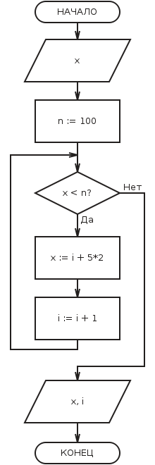

Цикл - управляющая структура, организующая многократное выполнение указанного действия.
Цикл "ПОКА":

Выполнение цикла "ПОКА" начинается с проверки условия, поэтому такую разновидность циклов называют циклами с предусловием. Переход к выполнению действия осуществляется только в том случае, если условие выполняется, в противном случае происходит выход из цикла. Можно сказать, что условие цикла "ПОКА" - это условие входа в цикл. В частном случае может оказаться, что действие не выполнялось ни разу. Условие цикла необходимо подобрать так, чтобы действия, выполняемые в цикле, привели к нарушению его истинности, иначе произойдёт зацикливание.
Зацикливание - бесконечное повторение выполняемых действий.
Пример использования цикла с предусловием (иллюстрация из программы):
